<!DOCTYPE html>
<html>
<head><meta name="generator" content="Hexo 3.8.0">
    <meta charset="utf-8">
    
    <title>Cent OS Apache와 Tomcat 연동 | J Dev</title>
    <meta name="viewport" content="width=device-width, initial-scale=1, maximum-scale=1">
    
        <meta name="keywords" content="linux,centos">
    
    <meta name="description" content="Apache와 Tomcat 연동Tomcat도 단독으로 서비스를 할 수 있으나 보편적으로 Apache와 연동하여 사용하는 경우가 많습니다. 그 이유는 아래와 같습니다.  정적컨텐츠의 서비스 속도(이미지 동영상의 경우 Apache가 빠름) 여러 대의 Apache와 Tomcat서버의 클러스터링 구성 Apache 웹서버의 다양한 모듈 확장 보안 강화  연동 방식은">
<meta name="keywords" content="linux,centos">
<meta property="og:type" content="article">
<meta property="og:title" content="Cent OS Apache와 Tomcat 연동">
<meta property="og:url" content="http://woonyzzang.github.com/2019/09/17/cent-os-apache-tomcat/index.html">
<meta property="og:site_name" content="J Dev">
<meta property="og:description" content="Apache와 Tomcat 연동Tomcat도 단독으로 서비스를 할 수 있으나 보편적으로 Apache와 연동하여 사용하는 경우가 많습니다. 그 이유는 아래와 같습니다.  정적컨텐츠의 서비스 속도(이미지 동영상의 경우 Apache가 빠름) 여러 대의 Apache와 Tomcat서버의 클러스터링 구성 Apache 웹서버의 다양한 모듈 확장 보안 강화  연동 방식은">
<meta property="og:locale" content="en">
<meta property="og:image" content="http://woonyzzang.github.com/2019/09/17/cent-os-apache-tomcat/cent-os-apache-tomcat_1.png">
<meta property="og:updated_time" content="2019-09-16T16:14:37.972Z">
<meta name="twitter:card" content="summary">
<meta name="twitter:title" content="Cent OS Apache와 Tomcat 연동">
<meta name="twitter:description" content="Apache와 Tomcat 연동Tomcat도 단독으로 서비스를 할 수 있으나 보편적으로 Apache와 연동하여 사용하는 경우가 많습니다. 그 이유는 아래와 같습니다.  정적컨텐츠의 서비스 속도(이미지 동영상의 경우 Apache가 빠름) 여러 대의 Apache와 Tomcat서버의 클러스터링 구성 Apache 웹서버의 다양한 모듈 확장 보안 강화  연동 방식은">
<meta name="twitter:image" content="http://woonyzzang.github.com/2019/09/17/cent-os-apache-tomcat/cent-os-apache-tomcat_1.png">
    
    <link rel="canonical" href="http://woonyzzang.github.com/2019/09/17/cent-os-apache-tomcat/">

    

    
        <link rel="icon" href="/images/favicon.png">
    

    <link rel="stylesheet" href="/libs/font-awesome/css/font-awesome.min.css">
    <link rel="stylesheet" href="/libs/titillium-web/styles.css">
    <link rel="stylesheet" href="/libs/source-code-pro/styles.css">

    <link rel="stylesheet" href="/css/style.css">

    <script src="/libs/jquery/2.0.3/jquery.min.js"></script>
    
    
        <link rel="stylesheet" href="/libs/lightgallery/css/lightgallery.min.css">
    
    
    

</head>
</html>
<body>
    <div id="wrap">
        <header id="header">
    <div id="header-outer" class="outer">
        <div class="container">
            <div class="container-inner">
                <div id="header-title">
                    <h1 class="logo-wrap">
                        <a href="/" class="logo"></a>
                    </h1>
                    
                        <h2 class="subtitle-wrap">
                            <p class="subtitle">Web Development Story Blog</p>
                        </h2>
                    
                </div>
                <div id="header-inner" class="nav-container">
                    <a id="main-nav-toggle" class="nav-icon fa fa-bars"></a>
                    <div class="nav-container-inner">
                        <ul id="main-nav">
                            
                                <li class="main-nav-list-item">
                                    <a class="main-nav-list-link" href="/">Home</a>
                                </li>
                            
                                        <ul class="main-nav-list"><li class="main-nav-list-item"><a class="main-nav-list-link" href="/categories/App/">App</a><ul class="main-nav-list-child"><li class="main-nav-list-item"><a class="main-nav-list-link" href="/categories/App/Ionic/">Ionic</a></li></ul></li><li class="main-nav-list-item"><a class="main-nav-list-link" href="/categories/Editor/">Editor</a><ul class="main-nav-list-child"><li class="main-nav-list-item"><a class="main-nav-list-link" href="/categories/Editor/SublimeText/">SublimeText</a></li><li class="main-nav-list-item"><a class="main-nav-list-link" href="/categories/Editor/Visualstudio/">Visualstudio</a></li><li class="main-nav-list-item"><a class="main-nav-list-link" href="/categories/Editor/Webstorm/">Webstorm</a></li></ul></li><li class="main-nav-list-item"><a class="main-nav-list-link" href="/categories/Etc/">Etc</a><ul class="main-nav-list-child"><li class="main-nav-list-item"><a class="main-nav-list-link" href="/categories/Etc/Log/">Log</a></li></ul></li><li class="main-nav-list-item"><a class="main-nav-list-link" href="/categories/FrontEnd/">FrontEnd</a><ul class="main-nav-list-child"><li class="main-nav-list-item"><a class="main-nav-list-link" href="/categories/FrontEnd/Angular-js/">Angular.js</a></li><li class="main-nav-list-item"><a class="main-nav-list-link" href="/categories/FrontEnd/Backbone-js/">Backbone.js</a></li><li class="main-nav-list-item"><a class="main-nav-list-link" href="/categories/FrontEnd/D3-js/">D3.js</a></li><li class="main-nav-list-item"><a class="main-nav-list-link" href="/categories/FrontEnd/Javascript-js/">Javascript.js</a></li><li class="main-nav-list-item"><a class="main-nav-list-link" href="/categories/FrontEnd/Node-js/">Node.js</a></li><li class="main-nav-list-item"><a class="main-nav-list-link" href="/categories/FrontEnd/React-js/">React.js</a></li><li class="main-nav-list-item"><a class="main-nav-list-link" href="/categories/FrontEnd/Require-js/">Require.js</a></li><li class="main-nav-list-item"><a class="main-nav-list-link" href="/categories/FrontEnd/Webpack/">Webpack</a></li><li class="main-nav-list-item"><a class="main-nav-list-link" href="/categories/FrontEnd/jQuery/">jQuery</a></li></ul></li><li class="main-nav-list-item"><a class="main-nav-list-link" href="/categories/OS/">OS</a><ul class="main-nav-list-child"><li class="main-nav-list-item"><a class="main-nav-list-link" href="/categories/OS/CentOS/">CentOS</a></li><li class="main-nav-list-item"><a class="main-nav-list-link" href="/categories/OS/Mac/">Mac</a></li><li class="main-nav-list-item"><a class="main-nav-list-link" href="/categories/OS/Ubuntu/">Ubuntu</a></li><li class="main-nav-list-item"><a class="main-nav-list-link" href="/categories/OS/Windows/">Windows</a></li></ul></li><li class="main-nav-list-item"><a class="main-nav-list-link" href="/categories/Server/">Server</a><ul class="main-nav-list-child"><li class="main-nav-list-item"><a class="main-nav-list-link" href="/categories/Server/ASP/">ASP</a></li><li class="main-nav-list-item"><a class="main-nav-list-link" href="/categories/Server/AWS/">AWS</a></li><li class="main-nav-list-item"><a class="main-nav-list-link" href="/categories/Server/Docker/">Docker</a></li><li class="main-nav-list-item"><a class="main-nav-list-link" href="/categories/Server/Gitlab/">Gitlab</a></li></ul></li><li class="main-nav-list-item"><a class="main-nav-list-link" href="/categories/Tools/">Tools</a><ul class="main-nav-list-child"><li class="main-nav-list-item"><a class="main-nav-list-link" href="/categories/Tools/APMSETUP/">APMSETUP</a></li><li class="main-nav-list-item"><a class="main-nav-list-link" href="/categories/Tools/Fiddler/">Fiddler</a></li><li class="main-nav-list-item"><a class="main-nav-list-link" href="/categories/Tools/OpenSSl/">OpenSSl</a></li><li class="main-nav-list-item"><a class="main-nav-list-link" href="/categories/Tools/VMware/">VMware</a></li></ul></li><li class="main-nav-list-item"><a class="main-nav-list-link" href="/categories/Web/">Web</a><ul class="main-nav-list-child"><li class="main-nav-list-item"><a class="main-nav-list-link" href="/categories/Web/CSS/">CSS</a></li><li class="main-nav-list-item"><a class="main-nav-list-link" href="/categories/Web/Descktop/">Descktop</a></li><li class="main-nav-list-item"><a class="main-nav-list-link" href="/categories/Web/HTML/">HTML</a></li><li class="main-nav-list-item"><a class="main-nav-list-link" href="/categories/Web/Mobile/">Mobile</a></li><li class="main-nav-list-item"><a class="main-nav-list-link" href="/categories/Web/Others/">Others</a></li></ul></li></ul>
                                    
                        </ul>
                        <nav id="sub-nav">
                            <div id="search-form-wrap">

    <form class="search-form">
        <input type="text" class="ins-search-input search-form-input" placeholder="Search">
        <button type="submit" class="search-form-submit"></button>
    </form>
    <div class="ins-search">
    <div class="ins-search-mask"></div>
    <div class="ins-search-container">
        <div class="ins-input-wrapper">
            <input type="text" class="ins-search-input" placeholder="Type something...">
            <span class="ins-close ins-selectable"><i class="fa fa-times-circle"></i></span>
        </div>
        <div class="ins-section-wrapper">
            <div class="ins-section-container"></div>
        </div>
    </div>
</div>
<script>
(function (window) {
    var INSIGHT_CONFIG = {
        TRANSLATION: {
            POSTS: 'Posts',
            PAGES: 'Pages',
            CATEGORIES: 'Categories',
            TAGS: 'Tags',
            UNTITLED: '(Untitled)',
        },
        ROOT_URL: '/',
        CONTENT_URL: '/content.json',
    };
    window.INSIGHT_CONFIG = INSIGHT_CONFIG;
})(window);
</script>
<script src="/js/insight.js"></script>

</div>
                        </nav>
                    </div>
                </div>
            </div>
        </div>
    </div>
</header>
        <div class="container">
            <div class="main-body container-inner">
                <div class="main-body-inner">
                    <section id="main">
                        <div class="main-body-header">
    <h1 class="header">
    
    <a class="page-title-link" href="/categories/OS/">OS</a><i class="icon fa fa-angle-right"></i><a class="page-title-link" href="/categories/OS/CentOS/">CentOS</a>
    </h1>
</div>
                        <div class="main-body-content">
                            <article id="post-cent-os-apache-tomcat" class="article article-single article-type-post" itemscope="" itemprop="blogPost">
    <div class="article-inner">
        
            <header class="article-header">
                
    
        <h1 class="article-title" itemprop="name">
        Cent OS Apache와 Tomcat 연동
        </h1>
    

            </header>
        
        
            <div class="article-subtitle">
                <a href="/2019/09/17/cent-os-apache-tomcat/" class="article-date">
    <time datetime="2019-09-16T16:08:39.000Z" itemprop="datePublished">2019-09-17</time>
</a>
                
    <ul class="article-tag-list"><li class="article-tag-list-item"><a class="article-tag-list-link" href="/tags/centos/">centos</a></li><li class="article-tag-list-item"><a class="article-tag-list-link" href="/tags/linux/">linux</a></li></ul>

            </div>
        
        
        <div class="article-entry" itemprop="articleBody">
            <h3 id="Apache와-Tomcat-연동"><a href="#Apache와-Tomcat-연동" class="headerlink" title="Apache와 Tomcat 연동"></a>Apache와 Tomcat 연동</h3><p>Tomcat도 단독으로 서비스를 할 수 있으나 보편적으로 Apache와 연동하여 사용하는 경우가 많습니다. 그 이유는 아래와 같습니다.</p>
<ul>
<li>정적컨텐츠의 서비스 속도(이미지 동영상의 경우 Apache가 빠름)</li>
<li>여러 대의 Apache와 Tomcat서버의 클러스터링 구성</li>
<li>Apache 웹서버의 다양한 모듈 확장</li>
<li>보안 강화</li>
</ul>
<p>연동 방식은 <code>mod_jk</code>, <code>mod_proxy</code>, <code>mod_prox_ajp</code> 세가지 방식이 존재한다고 합니다만, 이중에서 mod_jk 방식을 살펴 보겠습니다.대체적으로 보통 mod_jk로 연동하는 경우가 많고, 나머지 2가지에 비해 URL 또는 컨텐츠별 설정이 쉽다고 합니다.</p>
<h3 id="1-mod-jk설치"><a href="#1-mod-jk설치" class="headerlink" title="1. mod_jk설치"></a>1. mod_jk설치</h3><ul>
<li>mod_jk를 설치 하려면 gcc, gcc-c++, httpd-devel 세가지 패키지가 설치되어 있어야 합니다.</li>
<li>아래 명령어를 입력하여 3가지 패키지를 모두 설치합니다.</li>
</ul>
<figure class="highlight bash"><table><tr><td class="gutter"><pre><span class="line">1</span><br></pre></td><td class="code"><pre><span class="line">$ yum install gcc gcc-c++ httpd-devel</span><br></pre></td></tr></table></figure>
<p><a href="http://tomcat.apache.org/download-connectors.cgi" target="_blank" rel="noopener">http://tomcat.apache.org/download-connectors.cgi</a> 링크 위치 주소로 방문하여 최신 다운로드 파일 링크를 확인 합니다.</p>
<p>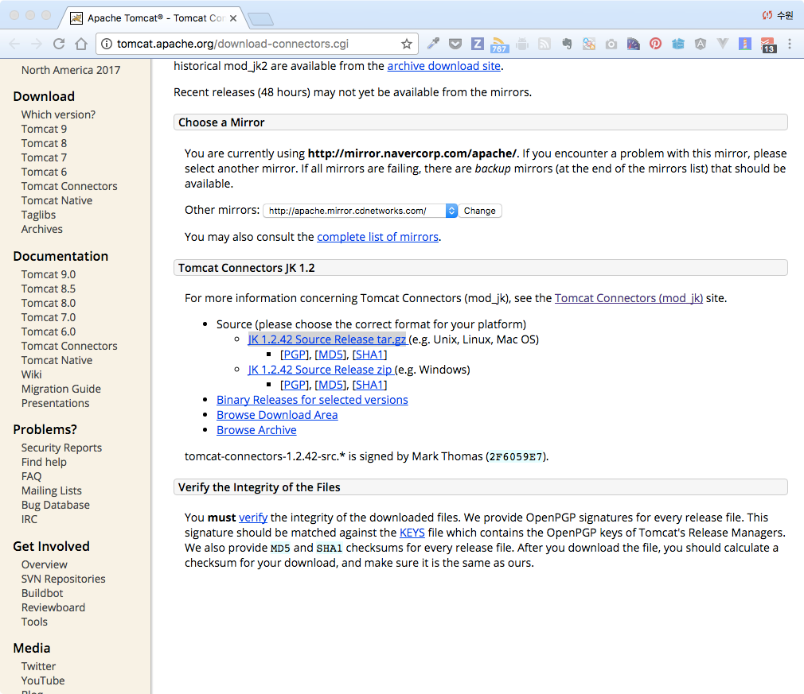</p>
<ul>
<li>화면 중간에 보시면 tar.gz파일의 링크가 있습니다. 우클릭하여 <code>링크 주소 복사</code> 를 통해 링크를 카피합니다.</li>
<li>다운로드 받을 디렉토리 위치로 이동한 후 파일을 아래의 명령어로 다운로드 받습니다.</li>
</ul>
<figure class="highlight bash"><table><tr><td class="gutter"><pre><span class="line">1</span><br><span class="line">2</span><br><span class="line">3</span><br></pre></td><td class="code"><pre><span class="line">$ wget -c &#123;&#123;링크카피주소&#125;&#125;</span><br><span class="line"></span><br><span class="line">$ wgwt -c http://mirror.navercorp.com/apache/tomcat/tomcat-connectors/jk/tomcat-connectors-1.2.46-src.tar.gz</span><br></pre></td></tr></table></figure>
<p>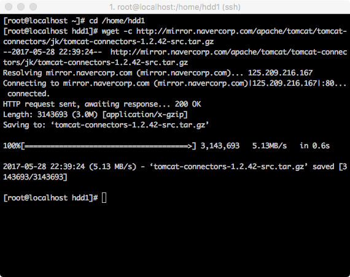</p>
<ul>
<li>다운로드 받은 파일의 확장자가 tar.gz입니다. 이는 압축파일이며, 압축파일을 해제하기 위해 아래의 명령어를 실행합니다.</li>
</ul>
<figure class="highlight bash"><table><tr><td class="gutter"><pre><span class="line">1</span><br></pre></td><td class="code"><pre><span class="line">$ tar zxvf tomcat-connector*</span><br></pre></td></tr></table></figure>
<ul>
<li>압축이 풀리며 디렉토리가 생성된 것을 확인할 수 있습니다.</li>
</ul>
<p>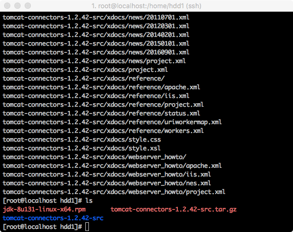</p>
<ul>
<li>생성된 디렉토리 안에 native디렉토리로 들어갑니다.</li>
</ul>
<p>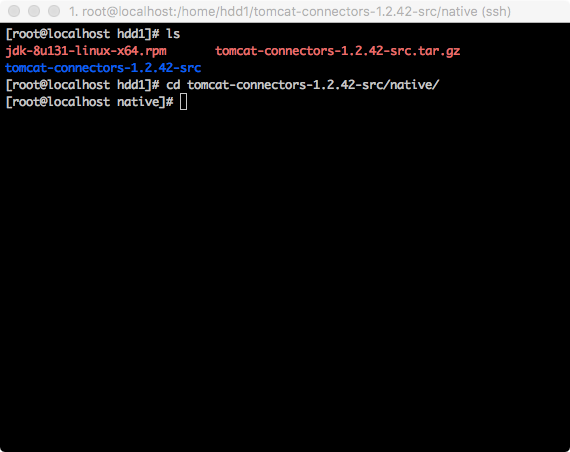</p>
<ul>
<li>Makefile을 생성하기 위해 아래 명령어를 실행합니다.</li>
<li>옵션 내용은 Apache확장기능 설치를 도와주는 유틸리티의 경로입니다.</li>
<li>기본 설치 경로는 <code>/usr/bin</code> 입니다.</li>
<li>혹, 경로에 찾을수 없다는 에러가 발생하신다면 <code>/usr/sbin</code> 의 경로도 한번 살펴보시기 바랍니다.</li>
</ul>
<figure class="highlight bash"><table><tr><td class="gutter"><pre><span class="line">1</span><br></pre></td><td class="code"><pre><span class="line">$ ./configure --with-apxs=/usr/bin/apxs</span><br></pre></td></tr></table></figure>
<p>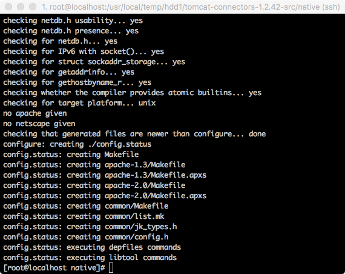</p>
<ul>
<li>make명령어로 컴파일을 실행합니다.</li>
</ul>
<figure class="highlight bash"><table><tr><td class="gutter"><pre><span class="line">1</span><br></pre></td><td class="code"><pre><span class="line">$ make</span><br></pre></td></tr></table></figure>
<ul>
<li>컴파일 완료후 install 합니다.</li>
</ul>
<figure class="highlight bash"><table><tr><td class="gutter"><pre><span class="line">1</span><br></pre></td><td class="code"><pre><span class="line">$ make install</span><br></pre></td></tr></table></figure>
<p>참고로 다음과 같은 명령어를 사용해서 컴파일과 install 을 동시에 실행할 수도 있습니다.</p>
<figure class="highlight bash"><table><tr><td class="gutter"><pre><span class="line">1</span><br></pre></td><td class="code"><pre><span class="line">$ make &amp;&amp; make install</span><br></pre></td></tr></table></figure>
<ul>
<li>install 후 <code>/etc/httpd/modules/</code> 경로의 파일 안에 <code>mod_jk.so</code> 파일이 생성되어있음을 확인할 수 있습니다.</li>
</ul>
<p>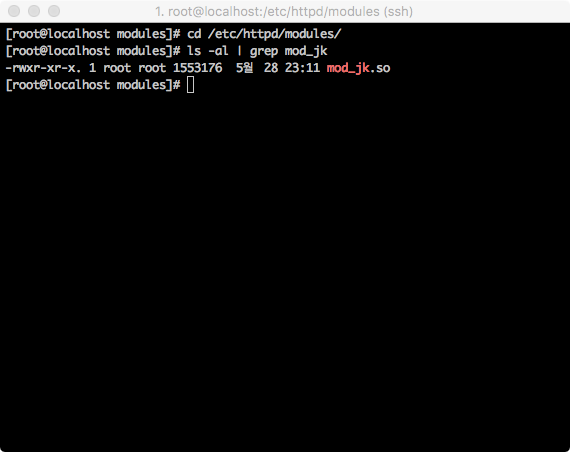</p>
<ul>
<li>Selinux의 보안관련 설정을 변경해주어야 하는데요, 아래의 명령어를 실행합니다.</li>
</ul>
<figure class="highlight bash"><table><tr><td class="gutter"><pre><span class="line">1</span><br></pre></td><td class="code"><pre><span class="line">$ chcon -u system_u -r object_r -t httpd_modules_t /etc/httpd/modules/mod_jk.so</span><br></pre></td></tr></table></figure>
<h3 id="2-Apache-설정"><a href="#2-Apache-설정" class="headerlink" title="2. Apache 설정"></a>2. Apache 설정</h3><ul>
<li>Apache의 설정은 <code>/etc/httpd/conf/httpd.conf</code> 파일인데 vi 에디터로 오픈합니다.</li>
<li>vi에디터 창에서 <code>/</code> 를 누르고 LoadModule 단어를 검색 키워드로 찾아(엔터후 n버튼을 누르면 다음찾기가 됩니다.) 그 아래쪽에 다음의 내용을 추가합니다.</li>
</ul>
<p><strong>httpd.conf 파일</strong></p>
<figure class="highlight plain"><table><tr><td class="gutter"><pre><span class="line">1</span><br><span class="line">2</span><br><span class="line">3</span><br><span class="line">4</span><br><span class="line">5</span><br><span class="line">6</span><br><span class="line">7</span><br><span class="line">8</span><br><span class="line">9</span><br><span class="line">10</span><br><span class="line">11</span><br><span class="line">12</span><br><span class="line">13</span><br><span class="line">14</span><br><span class="line">15</span><br><span class="line">16</span><br><span class="line">17</span><br><span class="line">18</span><br><span class="line">19</span><br></pre></td><td class="code"><pre><span class="line">...</span><br><span class="line"></span><br><span class="line">#</span><br><span class="line"># Dynamic Shared Object (DSO) Support</span><br><span class="line">#</span><br><span class="line"># To be able to use the functionality of a module which was built as a DSO you</span><br><span class="line"># have to place corresponding `LoadModule&apos; lines at this location so the</span><br><span class="line"># directives contained in it are actually available _before_ they are used.</span><br><span class="line"># Statically compiled modules (those listed by `httpd -l&apos;) do not need</span><br><span class="line"># to be loaded here.</span><br><span class="line">#</span><br><span class="line"># Example:</span><br><span class="line"># LoadModule foo_module modules/mod_foo.so</span><br><span class="line">#</span><br><span class="line">Include conf.modules.d/*.conf</span><br><span class="line"></span><br><span class="line">LoadModule jk_module modules/mod_jk.so // 추가</span><br><span class="line"></span><br><span class="line">...</span><br></pre></td></tr></table></figure>
<ul>
<li>Apache의 가상 호스트 <code>/etc/httpd/conf/extra/httpd-vhosts.conf</code> 파일도 아래 코드를 추가 합니다.</li>
<li>httpd-vhosts.conf 파일은 httpd.conf 에 가상호스트 include 설정이 되어 있어야 합니다.</li>
</ul>
<p><strong>httpd-vhosts.conf 파일</strong></p>
<figure class="highlight plain"><table><tr><td class="gutter"><pre><span class="line">1</span><br><span class="line">2</span><br><span class="line">3</span><br><span class="line">4</span><br><span class="line">5</span><br><span class="line">6</span><br><span class="line">7</span><br><span class="line">8</span><br><span class="line">9</span><br></pre></td><td class="code"><pre><span class="line">&lt;VirtualHost *:80&gt;</span><br><span class="line">    ServerName localhost</span><br><span class="line"></span><br><span class="line">    # 확장자 jsp, json, xml, do를 가진 경로는 woker worker1 으로 연결하는 구문입니다.     </span><br><span class="line">    JkMount /*.jsp worker1</span><br><span class="line">    JkMount /*.do worker1</span><br><span class="line">    JkMount /*.json worker1</span><br><span class="line">    JkMount /*.xml worker1    </span><br><span class="line">&lt;/VirtualHost&gt;</span><br></pre></td></tr></table></figure>
<p>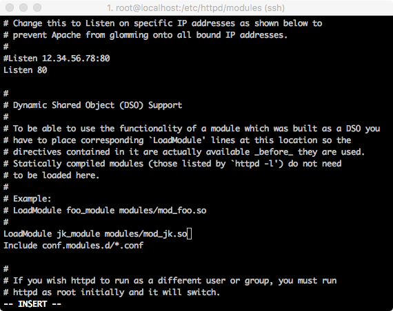</p>
<ul>
<li>화면에 보시면 conf.modules.d 경로가 include가 된 것을 볼 수 있습니다.</li>
<li><code>/etc/httpd/conf.modules.d</code> 경로에 진입하여 <code>vi mod_jk.conf</code> 를 실행하여 새로운 설정파일을 오픈 합니다.</li>
</ul>
<figure class="highlight bash"><table><tr><td class="gutter"><pre><span class="line">1</span><br></pre></td><td class="code"><pre><span class="line">$ vi /etc/httpd/conf.modules.d/mod_jk.conf</span><br></pre></td></tr></table></figure>
<figure class="highlight plain"><table><tr><td class="gutter"><pre><span class="line">1</span><br><span class="line">2</span><br><span class="line">3</span><br><span class="line">4</span><br><span class="line">5</span><br><span class="line">6</span><br><span class="line">7</span><br><span class="line">8</span><br><span class="line">9</span><br><span class="line">10</span><br><span class="line">11</span><br><span class="line">12</span><br></pre></td><td class="code"><pre><span class="line">&lt;IfModule mod_jk.c&gt;</span><br><span class="line">    # 워커 설정파일 위치</span><br><span class="line">    JkWorkersFile conf/workers_jk.properties</span><br><span class="line">    # 공유 메모리파일 위치 반드시 Selinux 보안때문에 run에 위치 필수     </span><br><span class="line">    JkShmFile run/mod_jk.shm     </span><br><span class="line">    # log 위치     </span><br><span class="line">    JkLogFile logs/mod_jk.log     </span><br><span class="line">    # 로그레벨 설정     </span><br><span class="line">    JkLogLevel info     </span><br><span class="line">    # 로그 포맷에 사용할 시간 형식을 지정한다.     </span><br><span class="line">    JkLogStampFormat &quot;[%y %m %d %H:%M:%S]&quot; </span><br><span class="line">&lt;/IfModule&gt;</span><br></pre></td></tr></table></figure>
<p>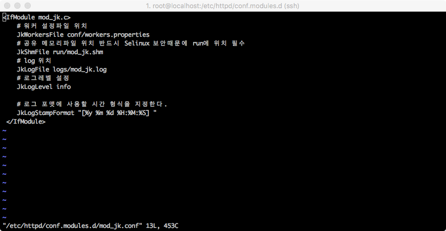</p>
<ul>
<li>vi 에디터에서 <code>:wq</code> 로 저장하고 빠져 나옵니다.</li>
<li>이제 mod_jk.conf 파일에서 설정한 워커 설정 파일을 만들 차례 입니다.</li>
<li>설정한 경로가 /etc/httpd/conf/workers_jk.properties 입니다.</li>
<li>vi 로 해당경로 를 오픈하여 파일을 생성합니다.</li>
</ul>
<figure class="highlight bash"><table><tr><td class="gutter"><pre><span class="line">1</span><br></pre></td><td class="code"><pre><span class="line">$ vi /etc/httpd/conf/workers_jk.properties</span><br></pre></td></tr></table></figure>
<figure class="highlight plain"><table><tr><td class="gutter"><pre><span class="line">1</span><br><span class="line">2</span><br><span class="line">3</span><br><span class="line">4</span><br><span class="line">5</span><br><span class="line">6</span><br></pre></td><td class="code"><pre><span class="line">worker.list=worker1</span><br><span class="line"></span><br><span class="line">worker.tomcat.port=8009 </span><br><span class="line">worker.tomcat.host=localhost </span><br><span class="line">worker.tomcat.type=ajp13 </span><br><span class="line">worker.tomcat.lbfactor=1</span><br></pre></td></tr></table></figure>
<ul>
<li>port를 8009로 설정함은 tomcat의 server.xml설정에 기인합니다. 확인은 아래에서 가능합니다.</li>
</ul>
<figure class="highlight bash"><table><tr><td class="gutter"><pre><span class="line">1</span><br></pre></td><td class="code"><pre><span class="line">$ vi /usr/share/tomcat/conf/server.xml</span><br></pre></td></tr></table></figure>
<p>tomcat 은 기본 URIEncoding 이 ISO-8859-1 이므로 한글이 깨지므로 모든 커넥터 설정에 <code>URIEncoding=&quot;UTF-8&quot;</code> 을 추가해야 합니다.</p>
<figure class="highlight xml"><table><tr><td class="gutter"><pre><span class="line">1</span><br></pre></td><td class="code"><pre><span class="line"><span class="tag">&lt;<span class="name">Connector</span> <span class="attr">port</span>=<span class="string">"8009"</span> <span class="attr">protocol</span>=<span class="string">"AJP/1.3"</span> <span class="attr">redirectPort</span>=<span class="string">"8443"</span> <span class="attr">URIEncoding</span>=<span class="string">"UTF-8"</span>/&gt;</span></span><br></pre></td></tr></table></figure>
<p>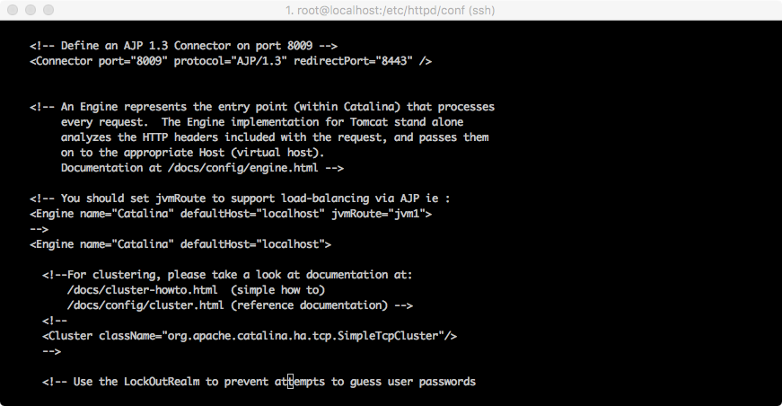</p>
<ul>
<li><code>/etc/httpd/conf/extra/httpd-vhosts.conf</code> 파일을 열어 Apache와 Tomcat Document 위치를 맞추어줍니다.</li>
<li>이부분을 맞추어 주지 않으면 jsp 파일은 보이지만 이미지와 CSS가 로드 되지 않습니다.</li>
<li>httpd-vhosts.conf 파일을 오픈하여 DocumentRoot 구문에 Tomcat의 문서 경로로 변경해줍니다.</li>
<li><strong>/usr/share/tomcat/webapps/ROOT</strong> 입니다.</li>
</ul>
<figure class="highlight bash"><table><tr><td class="gutter"><pre><span class="line">1</span><br></pre></td><td class="code"><pre><span class="line">$ vi /etc/httpd/conf/extra/httpd-vhosts.conf</span><br></pre></td></tr></table></figure>
<figure class="highlight plain"><table><tr><td class="gutter"><pre><span class="line">1</span><br><span class="line">2</span><br><span class="line">3</span><br><span class="line">4</span><br><span class="line">5</span><br><span class="line">6</span><br><span class="line">7</span><br><span class="line">8</span><br><span class="line">9</span><br><span class="line">10</span><br><span class="line">11</span><br><span class="line">12</span><br><span class="line">13</span><br><span class="line">14</span><br><span class="line">15</span><br><span class="line">16</span><br><span class="line">17</span><br></pre></td><td class="code"><pre><span class="line">&lt;VirtualHost *:80&gt;</span><br><span class="line">    ServerAdmin seungwoon@gmail.com</span><br><span class="line">    DocumentRoot /usr/share/tomcat/webapps/ # // 추가</span><br><span class="line">    ServerName localhost</span><br><span class="line"></span><br><span class="line">    # // 추가</span><br><span class="line">    &lt;Directory &quot;/usr/share/tomcat/webapps/ROOT/&quot;&gt;</span><br><span class="line">        AllowOverride none</span><br><span class="line">        Require all granted</span><br><span class="line">    &lt;/Directory&gt;</span><br><span class="line"></span><br><span class="line">    # 확장자 jsp, json, xml, do를 가진 경로는 woker tomcat으로 연결하는 구문입니다.</span><br><span class="line">    JkMount /*.jsp worker1</span><br><span class="line">    JkMount /*.do worker1</span><br><span class="line">    JkMount /*.xml worker1</span><br><span class="line">    JkMount /*.json worker1</span><br><span class="line">&lt;/VirtualHost&gt;</span><br></pre></td></tr></table></figure>
<ul>
<li><code>/etc/httpd/conf/httpd.conf</code> 파일을 열어 기본 인덱스 설정에 <code>index.jsp</code> 를 추가 합니다.</li>
</ul>
<figure class="highlight plain"><table><tr><td class="gutter"><pre><span class="line">1</span><br><span class="line">2</span><br><span class="line">3</span><br><span class="line">4</span><br><span class="line">5</span><br><span class="line">6</span><br><span class="line">7</span><br><span class="line">8</span><br><span class="line">9</span><br><span class="line">10</span><br><span class="line">11</span><br><span class="line">12</span><br></pre></td><td class="code"><pre><span class="line">#</span><br><span class="line"># DirectoryIndex: sets the file that Apache will serve if a directory</span><br><span class="line"># is requested.</span><br><span class="line"># // 변경 전</span><br><span class="line">&lt;IfModule dir_module&gt;</span><br><span class="line">    DirectoryIndex index.html</span><br><span class="line">&lt;/IfModule&gt;</span><br><span class="line"></span><br><span class="line"># 변경 후</span><br><span class="line">&lt;IfModule dir_module&gt;</span><br><span class="line">    DirectoryIndex index.html index.jsp</span><br><span class="line">&lt;/IfModule&gt;</span><br></pre></td></tr></table></figure>
<ul>
<li>마지막으로 아랫부분의 SELinux 설정을 해줍니다.</li>
</ul>
<figure class="highlight bash"><table><tr><td class="gutter"><pre><span class="line">1</span><br></pre></td><td class="code"><pre><span class="line">$ chcon -R --type=httpd_sys_rw_content_t /usr/share/tomcat/webapps/ROOT</span><br></pre></td></tr></table></figure>
<p>만약 위 명령어 실행 시 에러가 발생하면  <code>setenforce 0</code> 명령어로 SELinux 임시 해제 후 SELinux 설정을 한 후 <code>setenforce 1</code> 명령어로 SELinux 실행 합니다.</p>
<figure class="highlight bash"><table><tr><td class="gutter"><pre><span class="line">1</span><br><span class="line">2</span><br><span class="line">3</span><br></pre></td><td class="code"><pre><span class="line">$ setenforce 0 // SELinux 끄기</span><br><span class="line">$ chcon -R --type=httpd_sys_rw_content_t /usr/share/tomcat/webapps/ROOT</span><br><span class="line">$ setenforce 1 // SELinux 켜기</span><br></pre></td></tr></table></figure>
<ul>
<li>아파치를 재시작 합니다.</li>
</ul>
<figure class="highlight bash"><table><tr><td class="gutter"><pre><span class="line">1</span><br></pre></td><td class="code"><pre><span class="line">$ systemctl restart httpd</span><br></pre></td></tr></table></figure>
<ul>
<li>톰캣을 재시작 합니다.</li>
</ul>
<figure class="highlight bash"><table><tr><td class="gutter"><pre><span class="line">1</span><br></pre></td><td class="code"><pre><span class="line">$ systemctl restart tomcat</span><br></pre></td></tr></table></figure>
<ul>
<li>이제 결과를 확인 하기 위하여 http:///index.jsp로 접속합니다.</li>
<li>8080포트 없이 진입했는데 Tomcat화면이 나오시면 성공입니다.</li>
</ul>
<p>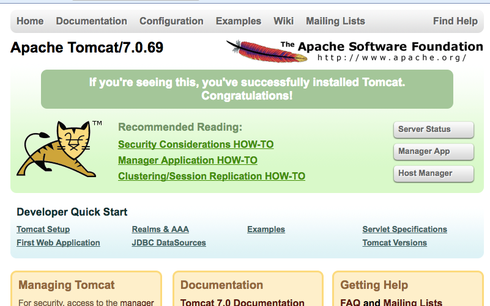</p>
<p>그러면 보시는 바와 같이 톰캣 페이지가 응답이 되지만, CSS, image 등이 제외된 상태로 HTML 문서만 응답이 됩니다.</p>
<p>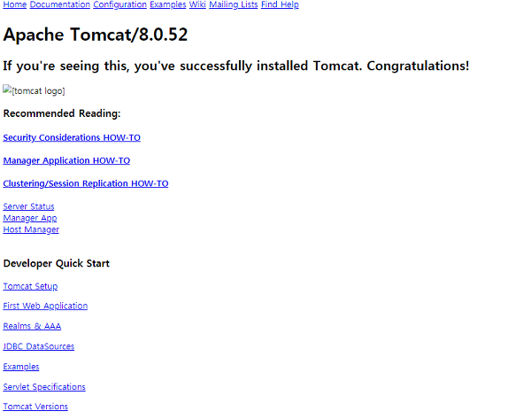</p>
<p>그 이유는 아파치 환경 설정에서 tomcat connection 에서 설정한 JkMount 옵션 때문입니다.<br>.jsp 파일만 worker가 처리하도록 보냈기 때문에, 정적 파일들은 아파치에서 응답해야 합니다.<br>하지만 아파치에는 톰캣 페이지에서 제공해야 하는 정적 파일들이 없기 때문에 톰캣에서 받아온 HTML 문서만 응답할 수 밖에 없습니다.</p>
<p>이로 미루어 보아, worker를 통해 아파치가 톰캣으로부터 jsp파일만 가져온 것을 확인할 수 있습니다.<br>즉, 아파치와 톰캣이 연동된 것입니다.</p>
<p>간단한 애플리케이션이 있다면 worker를 수정해서 80포트로 접근했을 때 애플리케이션을 응답할 수 있도록 설정할 수 있습니다.<br>Tomcat Manager에서 웹 애플리케이션을 deploy 했을 때, 그 이름을 example 이라고 하겠습니다.<br>그러면 JkMount를 다음과 같이 수정해서 웹 애플리케이션이 아파치와 연동되서 실행될 수 있습니다</p>
<figure class="highlight bash"><table><tr><td class="gutter"><pre><span class="line">1</span><br></pre></td><td class="code"><pre><span class="line">$ vi /etc/httpd/conf/extra/httpd-vhosts.conf</span><br></pre></td></tr></table></figure>
<p>Tomcat connection 부분의 JkMount를 아래와 같이 수정합니다.</p>
<figure class="highlight plain"><table><tr><td class="gutter"><pre><span class="line">1</span><br><span class="line">2</span><br><span class="line">3</span><br><span class="line">4</span><br><span class="line">5</span><br><span class="line">6</span><br><span class="line">7</span><br><span class="line">8</span><br><span class="line">9</span><br><span class="line">10</span><br><span class="line">11</span><br><span class="line">12</span><br></pre></td><td class="code"><pre><span class="line">&lt;VirtualHost *:80&gt;</span><br><span class="line">    ServerAdmin seungwoon@gmail.com</span><br><span class="line">    DocumentRoot /usr/share/tomcat/webapps/</span><br><span class="line">    ServerName localhost</span><br><span class="line"></span><br><span class="line">    &lt;Directory &quot;/usr/share/tomcat/webapps/ROOT/&quot;&gt;</span><br><span class="line">        AllowOverride none</span><br><span class="line">        Require all granted</span><br><span class="line">    &lt;/Directory&gt;</span><br><span class="line"></span><br><span class="line">    JkMount /example/* worker1 # // 수정</span><br><span class="line">&lt;/VirtualHost&gt;</span><br></pre></td></tr></table></figure>
<p>다시 아파치를 재시작 합니다.</p>
<figure class="highlight bash"><table><tr><td class="gutter"><pre><span class="line">1</span><br></pre></td><td class="code"><pre><span class="line">$ systemctl restart httpd</span><br></pre></td></tr></table></figure>
<p>브라우저에서 http:///example/~~ )에 접속해봅니다.</p>
<p>만약에 리소스 파일 계속 접근이 안된다면 <code>/usr/share/tomcat/webapps/ROOT</code> 디렉토리의 파일권한을 755로 변경 해줍니다.</p>
<h3 id="Tomcat-ROOT-디렉토리로-변경"><a href="#Tomcat-ROOT-디렉토리로-변경" class="headerlink" title="Tomcat ROOT 디렉토리로 변경"></a>Tomcat ROOT 디렉토리로 변경</h3><p><code>/usr/share/tomcat/conf/server.xml</code> 파일에서 아래 처럼 변경 후 톰캣 재시작을 합니다.</p>
<figure class="highlight xml"><table><tr><td class="gutter"><pre><span class="line">1</span><br><span class="line">2</span><br><span class="line">3</span><br><span class="line">4</span><br><span class="line">5</span><br><span class="line">6</span><br><span class="line">7</span><br><span class="line">8</span><br><span class="line">9</span><br><span class="line">10</span><br><span class="line">11</span><br><span class="line">12</span><br></pre></td><td class="code"><pre><span class="line"># // 변경 전</span><br><span class="line"><span class="tag">&lt;<span class="name">Host</span> <span class="attr">name</span>=<span class="string">"localhost"</span> <span class="attr">appBase</span>=<span class="string">"webapps"</span></span></span><br><span class="line"><span class="tag">    <span class="attr">unpackWARs</span>=<span class="string">"true"</span> <span class="attr">autoDeploy</span>=<span class="string">"true"</span>&gt;</span></span><br><span class="line">    ...</span><br><span class="line"><span class="tag">&lt;/<span class="name">Host</span>&gt;</span></span><br><span class="line"></span><br><span class="line"># 변경 후</span><br><span class="line"><span class="tag">&lt;<span class="name">Host</span> <span class="attr">name</span>=<span class="string">"localhost"</span> <span class="attr">appBase</span>=<span class="string">"/home/www"</span></span></span><br><span class="line"><span class="tag">    <span class="attr">unpackWARs</span>=<span class="string">"false"</span> <span class="attr">autoDeploy</span>=<span class="string">"false"</span>&gt;</span></span><br><span class="line">    <span class="tag">&lt;<span class="name">Context</span> <span class="attr">path</span>=<span class="string">"/"</span> <span class="attr">docBase</span>=<span class="string">"."</span> <span class="attr">reloadable</span>=<span class="string">"false"</span> /&gt;</span></span><br><span class="line">        ...</span><br><span class="line"><span class="tag">&lt;/<span class="name">Host</span>&gt;</span></span><br></pre></td></tr></table></figure>
<h3 id="WAR-파일-수동-압축-풀기"><a href="#WAR-파일-수동-압축-풀기" class="headerlink" title="WAR 파일 수동 압축 풀기"></a>WAR 파일 수동 압축 풀기</h3><figure class="highlight bash"><table><tr><td class="gutter"><pre><span class="line">1</span><br></pre></td><td class="code"><pre><span class="line">$ jar xvf &lt;war파일이름&gt;.war 입력</span><br></pre></td></tr></table></figure>
<p><strong>:8080포트 차단하기</strong></p>
<ul>
<li>vi 에디터로 <code>/usr/share/tomcat/conf/server.xml</code> 파일을 오픈 합니다.</li>
<li>Connector port가 <code>8080</code> 으로 되어 있는데 이부분을 <code>80</code> 으로 변경하면 됩니다.</li>
</ul>
<figure class="highlight xml"><table><tr><td class="gutter"><pre><span class="line">1</span><br><span class="line">2</span><br><span class="line">3</span><br><span class="line">4</span><br><span class="line">5</span><br><span class="line">6</span><br><span class="line">7</span><br><span class="line">8</span><br><span class="line">9</span><br><span class="line">10</span><br><span class="line">11</span><br><span class="line">12</span><br><span class="line">13</span><br><span class="line">14</span><br><span class="line">15</span><br><span class="line">16</span><br><span class="line">17</span><br><span class="line">18</span><br><span class="line">19</span><br><span class="line">20</span><br></pre></td><td class="code"><pre><span class="line">...</span><br><span class="line"></span><br><span class="line"><span class="comment">&lt;!-- A "Connector" represents an endpoint by which requests are received</span></span><br><span class="line"><span class="comment">    and responses are returned. Documentation at :</span></span><br><span class="line"><span class="comment">    Java HTTP Connector: /docs/config/http.html (blocking &amp; non-blocking)</span></span><br><span class="line"><span class="comment">    Java AJP  Connector: /docs/config/ajp.html</span></span><br><span class="line"><span class="comment">    APR (HTTP/AJP) Connector: /docs/apr.html</span></span><br><span class="line"><span class="comment">    Define a non-SSL HTTP/1.1 Connector on port 8080</span></span><br><span class="line"><span class="comment">--&gt;</span></span><br><span class="line"><span class="comment">&lt;!-- // 변경 전 --&gt;</span></span><br><span class="line"><span class="tag">&lt;<span class="name">Connector</span> <span class="attr">port</span>=<span class="string">"8080"</span> <span class="attr">protocol</span>=<span class="string">"HTTP/1.1"</span></span></span><br><span class="line"><span class="tag">    <span class="attr">connectionTimeout</span>=<span class="string">"20000"</span></span></span><br><span class="line"><span class="tag">    <span class="attr">redirectPort</span>=<span class="string">"8443"</span> /&gt;</span></span><br><span class="line"></span><br><span class="line"><span class="comment">&lt;!-- // 변경 후 --&gt;</span></span><br><span class="line"><span class="tag">&lt;<span class="name">Connector</span> <span class="attr">port</span>=<span class="string">"80"</span> <span class="attr">protocol</span>=<span class="string">"HTTP/1.1"</span></span></span><br><span class="line"><span class="tag">    <span class="attr">connectionTimeout</span>=<span class="string">"20000"</span></span></span><br><span class="line"><span class="tag">    <span class="attr">redirectPort</span>=<span class="string">"8443"</span> /&gt;</span></span><br><span class="line"></span><br><span class="line">...</span><br></pre></td></tr></table></figure>
<h3 id="참조"><a href="#참조" class="headerlink" title="참조"></a>참조</h3><ul>
<li><a href="https://suwoni-codelab.com/linux/2017/05/29/Linux-CentOS-Apache-Tomcat/" target="_blank" rel="noopener">https://suwoni-codelab.com/linux/2017/05/29/Linux-CentOS-Apache-Tomcat/</a></li>
<li><a href="https://goddaehee.tistory.com/77" target="_blank" rel="noopener">https://goddaehee.tistory.com/77</a></li>
<li><a href="https://victorydntmd.tistory.com/225" target="_blank" rel="noopener">https://victorydntmd.tistory.com/225</a></li>
</ul>

        </div>
        <footer class="article-footer">
            


    <a data-url="http://woonyzzang.github.com/2019/09/17/cent-os-apache-tomcat/" data-id="ck0uxw5it0011j49k244dxefe" class="article-share-link"><i class="fa fa-share"></i>Share</a>
<script>
    (function ($) {
        $('body').on('click', function() {
            $('.article-share-box.on').removeClass('on');
        }).on('click', '.article-share-link', function(e) {
            e.stopPropagation();

            var $this = $(this),
                url = $this.attr('data-url'),
                encodedUrl = encodeURIComponent(url),
                id = 'article-share-box-' + $this.attr('data-id'),
                offset = $this.offset(),
                box;

            if ($('#' + id).length) {
                box = $('#' + id);

                if (box.hasClass('on')){
                    box.removeClass('on');
                    return;
                }
            } else {
                var html = [
                    '<div id="' + id + '" class="article-share-box">',
                        '<input class="article-share-input" value="' + url + '">',
                        '<div class="article-share-links">',
                            '<a href="https://twitter.com/intent/tweet?url=' + encodedUrl + '" class="article-share-twitter" target="_blank" title="Twitter"></a>',
                            '<a href="https://www.facebook.com/sharer.php?u=' + encodedUrl + '" class="article-share-facebook" target="_blank" title="Facebook"></a>',
                            '<a href="http://pinterest.com/pin/create/button/?url=' + encodedUrl + '" class="article-share-pinterest" target="_blank" title="Pinterest"></a>',
                            '<a href="https://plus.google.com/share?url=' + encodedUrl + '" class="article-share-google" target="_blank" title="Google+"></a>',
                        '</div>',
                    '</div>'
                ].join('');

              box = $(html);

              $('body').append(box);
            }

            $('.article-share-box.on').hide();

            box.css({
                top: offset.top + 25,
                left: offset.left
            }).addClass('on');

        }).on('click', '.article-share-box', function (e) {
            e.stopPropagation();
        }).on('click', '.article-share-box-input', function () {
            $(this).select();
        }).on('click', '.article-share-box-link', function (e) {
            e.preventDefault();
            e.stopPropagation();

            window.open(this.href, 'article-share-box-window-' + Date.now(), 'width=500,height=450');
        });
    })(jQuery);
</script>

        </footer>
    </div>
</article>

    <section id="comments">
    
        
    <div id="disqus_thread">
        <noscript>Please enable JavaScript to view the <a href="//disqus.com/?ref_noscript">comments powered by Disqus.</a></noscript>
    </div>

    
    </section>


                        </div>
                    </section>
                    <aside id="sidebar">
    <a class="sidebar-toggle" title="Expand Sidebar"><i class="toggle icon"></i></a>
    <div class="sidebar-top">
        <p>follow:</p>
        <ul class="social-links">
            
                
                <li>
                    <a class="social-tooltip" title="github" href="https://github.com/woonyzzang/" target="_blank">
                        <i class="icon fa fa-github"></i>
                    </a>
                </li>
                
            
                
                <li>
                    <a class="social-tooltip" title="cloud" href="http://j-portfolio.herokuapp.com/" target="_blank">
                        <i class="icon fa fa-cloud"></i>
                    </a>
                </li>
                
            
                
                <li>
                    <a class="social-tooltip" title="jsfiddle" href="https://jsfiddle.net/user/woonyzzang/fiddles/" target="_blank">
                        <i class="icon fa fa-jsfiddle"></i>
                    </a>
                </li>
                
            
        </ul>
    </div>
    <!-- github card -->
    
    <div class="github-card" data-github="woonyzzang" data-width="100%" data-height="150" data-theme="default"></div>
    
    <script src="/libs/github-cards/widget.min.js"></script>
    <!-- //github card -->
    
        
<nav id="article-nav">
    
        <a href="/2019/09/17/cent-os-tomcat9-install/" id="article-nav-newer" class="article-nav-link-wrap">
        <strong class="article-nav-caption">newer</strong>
        <p class="article-nav-title">
        
            Cent OS Tomcat 9 수동 설치
        
        </p>
        <i class="icon fa fa-chevron-right" id="icon-chevron-right"></i>
    </a>
    
    
        <a href="/2019/09/17/cent-os-tomcat-install/" id="article-nav-older" class="article-nav-link-wrap">
        <strong class="article-nav-caption">older</strong>
        <p class="article-nav-title">Cent OS Tomcat 설치</p>
        <i class="icon fa fa-chevron-left" id="icon-chevron-left"></i>
        </a>
    
</nav>

    
    <div class="widgets-container">
        
            
                
    <div class="widget-wrap widget-list">
        <h3 class="widget-title">categories</h3>
        <div class="widget">
            <ul class="category-list"><li class="category-list-item"><a class="category-list-link" href="/categories/App/">App</a><span class="category-list-count">6</span><ul class="category-list-child"><li class="category-list-item"><a class="category-list-link" href="/categories/App/Ionic/">Ionic</a><span class="category-list-count">6</span></li></ul></li><li class="category-list-item"><a class="category-list-link" href="/categories/Editor/">Editor</a><span class="category-list-count">10</span><ul class="category-list-child"><li class="category-list-item"><a class="category-list-link" href="/categories/Editor/SublimeText/">SublimeText</a><span class="category-list-count">3</span></li><li class="category-list-item"><a class="category-list-link" href="/categories/Editor/Visualstudio/">Visualstudio</a><span class="category-list-count">1</span></li><li class="category-list-item"><a class="category-list-link" href="/categories/Editor/Webstorm/">Webstorm</a><span class="category-list-count">6</span></li></ul></li><li class="category-list-item"><a class="category-list-link" href="/categories/Etc/">Etc</a><span class="category-list-count">2</span><ul class="category-list-child"><li class="category-list-item"><a class="category-list-link" href="/categories/Etc/Log/">Log</a><span class="category-list-count">2</span></li></ul></li><li class="category-list-item"><a class="category-list-link" href="/categories/FrontEnd/">FrontEnd</a><span class="category-list-count">58</span><ul class="category-list-child"><li class="category-list-item"><a class="category-list-link" href="/categories/FrontEnd/Angular-js/">Angular.js</a><span class="category-list-count">2</span></li><li class="category-list-item"><a class="category-list-link" href="/categories/FrontEnd/Backbone-js/">Backbone.js</a><span class="category-list-count">6</span></li><li class="category-list-item"><a class="category-list-link" href="/categories/FrontEnd/D3-js/">D3.js</a><span class="category-list-count">9</span></li><li class="category-list-item"><a class="category-list-link" href="/categories/FrontEnd/Javascript-js/">Javascript.js</a><span class="category-list-count">21</span></li><li class="category-list-item"><a class="category-list-link" href="/categories/FrontEnd/Node-js/">Node.js</a><span class="category-list-count">1</span></li><li class="category-list-item"><a class="category-list-link" href="/categories/FrontEnd/React-js/">React.js</a><span class="category-list-count">12</span></li><li class="category-list-item"><a class="category-list-link" href="/categories/FrontEnd/Require-js/">Require.js</a><span class="category-list-count">2</span></li><li class="category-list-item"><a class="category-list-link" href="/categories/FrontEnd/Webpack/">Webpack</a><span class="category-list-count">3</span></li><li class="category-list-item"><a class="category-list-link" href="/categories/FrontEnd/jQuery/">jQuery</a><span class="category-list-count">2</span></li></ul></li><li class="category-list-item"><a class="category-list-link" href="/categories/OS/">OS</a><span class="category-list-count">26</span><ul class="category-list-child"><li class="category-list-item"><a class="category-list-link" href="/categories/OS/CentOS/">CentOS</a><span class="category-list-count">7</span></li><li class="category-list-item"><a class="category-list-link" href="/categories/OS/Mac/">Mac</a><span class="category-list-count">5</span></li><li class="category-list-item"><a class="category-list-link" href="/categories/OS/Ubuntu/">Ubuntu</a><span class="category-list-count">4</span></li><li class="category-list-item"><a class="category-list-link" href="/categories/OS/Windows/">Windows</a><span class="category-list-count">10</span></li></ul></li><li class="category-list-item"><a class="category-list-link" href="/categories/Server/">Server</a><span class="category-list-count">12</span><ul class="category-list-child"><li class="category-list-item"><a class="category-list-link" href="/categories/Server/ASP/">ASP</a><span class="category-list-count">4</span></li><li class="category-list-item"><a class="category-list-link" href="/categories/Server/AWS/">AWS</a><span class="category-list-count">1</span></li><li class="category-list-item"><a class="category-list-link" href="/categories/Server/Docker/">Docker</a><span class="category-list-count">6</span></li><li class="category-list-item"><a class="category-list-link" href="/categories/Server/Gitlab/">Gitlab</a><span class="category-list-count">1</span></li></ul></li><li class="category-list-item"><a class="category-list-link" href="/categories/Tools/">Tools</a><span class="category-list-count">5</span><ul class="category-list-child"><li class="category-list-item"><a class="category-list-link" href="/categories/Tools/APMSETUP/">APMSETUP</a><span class="category-list-count">1</span></li><li class="category-list-item"><a class="category-list-link" href="/categories/Tools/Fiddler/">Fiddler</a><span class="category-list-count">2</span></li><li class="category-list-item"><a class="category-list-link" href="/categories/Tools/OpenSSl/">OpenSSl</a><span class="category-list-count">1</span></li><li class="category-list-item"><a class="category-list-link" href="/categories/Tools/VMware/">VMware</a><span class="category-list-count">1</span></li></ul></li><li class="category-list-item"><a class="category-list-link" href="/categories/Web/">Web</a><span class="category-list-count">18</span><ul class="category-list-child"><li class="category-list-item"><a class="category-list-link" href="/categories/Web/CSS/">CSS</a><span class="category-list-count">6</span></li><li class="category-list-item"><a class="category-list-link" href="/categories/Web/Descktop/">Descktop</a><span class="category-list-count">2</span></li><li class="category-list-item"><a class="category-list-link" href="/categories/Web/HTML/">HTML</a><span class="category-list-count">1</span></li><li class="category-list-item"><a class="category-list-link" href="/categories/Web/Mobile/">Mobile</a><span class="category-list-count">5</span></li><li class="category-list-item"><a class="category-list-link" href="/categories/Web/Others/">Others</a><span class="category-list-count">4</span></li></ul></li></ul>
        </div>
    </div>


            
                
    <div class="widget-wrap widget-list">
        <h3 class="widget-title">archives</h3>
        <div class="widget">
            <ul class="archive-list"><li class="archive-list-item"><a class="archive-list-link" href="/archives/2019/09/">September 2019</a><span class="archive-list-count">7</span></li><li class="archive-list-item"><a class="archive-list-link" href="/archives/2019/08/">August 2019</a><span class="archive-list-count">22</span></li><li class="archive-list-item"><a class="archive-list-link" href="/archives/2019/03/">March 2019</a><span class="archive-list-count">1</span></li><li class="archive-list-item"><a class="archive-list-link" href="/archives/2018/11/">November 2018</a><span class="archive-list-count">3</span></li><li class="archive-list-item"><a class="archive-list-link" href="/archives/2018/04/">April 2018</a><span class="archive-list-count">2</span></li><li class="archive-list-item"><a class="archive-list-link" href="/archives/2017/11/">November 2017</a><span class="archive-list-count">3</span></li><li class="archive-list-item"><a class="archive-list-link" href="/archives/2017/10/">October 2017</a><span class="archive-list-count">4</span></li><li class="archive-list-item"><a class="archive-list-link" href="/archives/2017/08/">August 2017</a><span class="archive-list-count">1</span></li><li class="archive-list-item"><a class="archive-list-link" href="/archives/2017/07/">July 2017</a><span class="archive-list-count">5</span></li><li class="archive-list-item"><a class="archive-list-link" href="/archives/2017/06/">June 2017</a><span class="archive-list-count">3</span></li><li class="archive-list-item"><a class="archive-list-link" href="/archives/2017/05/">May 2017</a><span class="archive-list-count">33</span></li><li class="archive-list-item"><a class="archive-list-link" href="/archives/2017/04/">April 2017</a><span class="archive-list-count">10</span></li><li class="archive-list-item"><a class="archive-list-link" href="/archives/2017/03/">March 2017</a><span class="archive-list-count">25</span></li><li class="archive-list-item"><a class="archive-list-link" href="/archives/2017/02/">February 2017</a><span class="archive-list-count">19</span></li></ul>
        </div>
    </div>


            
                
    <div class="widget-wrap widget-float">
        <h3 class="widget-title">tag cloud</h3>
        <div class="widget tagcloud">
            <a href="/tags/angular-v1/" style="font-size: 11px;">angular v1</a> <a href="/tags/apmsetup/" style="font-size: 10px;">apmsetup</a> <a href="/tags/asp/" style="font-size: 13px;">asp</a> <a href="/tags/aws/" style="font-size: 10px;">aws</a> <a href="/tags/backbone/" style="font-size: 15px;">backbone</a> <a href="/tags/centos/" style="font-size: 16px;">centos</a> <a href="/tags/chrome/" style="font-size: 12px;">chrome</a> <a href="/tags/css/" style="font-size: 15px;">css</a> <a href="/tags/css3/" style="font-size: 15px;">css3</a> <a href="/tags/d3/" style="font-size: 17px;">d3</a> <a href="/tags/descktop/" style="font-size: 11px;">descktop</a> <a href="/tags/docker/" style="font-size: 15px;">docker</a> <a href="/tags/es6/" style="font-size: 13px;">es6</a> <a href="/tags/fiddler/" style="font-size: 11px;">fiddler</a> <a href="/tags/gitlab/" style="font-size: 10px;">gitlab</a> <a href="/tags/html/" style="font-size: 10px;">html</a> <a href="/tags/html5/" style="font-size: 10px;">html5</a> <a href="/tags/ionic-v1/" style="font-size: 14px;">ionic v1</a> <a href="/tags/ionic-v2/" style="font-size: 10px;">ionic v2</a> <a href="/tags/jquery/" style="font-size: 11px;">jquery</a> <a href="/tags/js/" style="font-size: 20px;">js</a> <a href="/tags/linux/" style="font-size: 18px;">linux</a> <a href="/tags/log/" style="font-size: 11px;">log</a> <a href="/tags/mac/" style="font-size: 14px;">mac</a> <a href="/tags/markdown/" style="font-size: 10px;">markdown</a> <a href="/tags/mobile/" style="font-size: 18px;">mobile</a> <a href="/tags/node/" style="font-size: 10px;">node</a> <a href="/tags/openssl/" style="font-size: 10px;">openssl</a> <a href="/tags/others/" style="font-size: 13px;">others</a> <a href="/tags/react/" style="font-size: 19px;">react</a> <a href="/tags/require/" style="font-size: 11px;">require</a> <a href="/tags/server/" style="font-size: 16px;">server</a> <a href="/tags/sublimeText/" style="font-size: 12px;">sublimeText</a> <a href="/tags/tip/" style="font-size: 11px;">tip</a> <a href="/tags/ubuntu/" style="font-size: 13px;">ubuntu</a> <a href="/tags/visualstudio/" style="font-size: 10px;">visualstudio</a> <a href="/tags/visualsvn/" style="font-size: 10px;">visualsvn</a> <a href="/tags/vmware/" style="font-size: 11px;">vmware</a> <a href="/tags/webpack/" style="font-size: 12px;">webpack</a> <a href="/tags/webpack-v2/" style="font-size: 11px;">webpack v2</a> <a href="/tags/webstorm/" style="font-size: 15px;">webstorm</a> <a href="/tags/windows/" style="font-size: 18px;">windows</a>
        </div>
    </div>


            
                
    <div class="widget-wrap widget-list">
        <h3 class="widget-title">links</h3>
        <div class="widget">
            <ul>
                
                    <li>
                        <a href="http://j-portfolio.herokuapp.com/dev/cms/">CMS Theme</a>
                    </li>
                
                    <li>
                        <a href="http://j-portfolio.herokuapp.com/dev/listmap/listmap.xml">Markup Listmap</a>
                    </li>
                
                    <li>
                        <a href="https://github.com/woonyzzang/j-generator-css3">J Generator CSS3</a>
                    </li>
                
                    <li>
                        <a href="https://github.com/woonyzzang/j-html5-reference">J HTML5 Open Reference</a>
                    </li>
                
                    <li>
                        <a href="https://github.com/woonyzzang/j-prototype">J Prototype</a>
                    </li>
                
                    <li>
                        <a href="https://github.com/woonyzzang/j-draft-design">J Draft Design Gallery</a>
                    </li>
                
                    <li>
                        <a href="https://github.com/woonyzzang/j-responsive-design-view">J Responsive Design View</a>
                    </li>
                
                    <li>
                        <a href="https://github.com/woonyzzang/j-memo">J Memo</a>
                    </li>
                
                    <li>
                        <a href="https://github.com/woonyzzang/j-hiworks-mail-notifier">J Hiworks Notifier</a>
                    </li>
                
                    <li>
                        <a href="https://github.com/woonyzzang/j-core-module">J Core Module</a>
                    </li>
                
                    <li>
                        <a href="https://github.com/woonyzzang/j-core-editor">J Core Editor</a>
                    </li>
                
                    <li>
                        <a href="https://github.com/woonyzzang/j-cheat-sheet-api">J Cheat Sheet API</a>
                    </li>
                
            </ul>
        </div>
    </div>


            
        
    </div>
</aside>
                </div>
            </div>
        </div>
        <footer id="footer">
    <div class="container">
        <div class="container-inner">
            <a id="back-to-top" href="javascript:;"><i class="icon fa fa-angle-up"></i></a>
            <div class="credit">
                <h1 class="logo-wrap">
                    <a href="/" class="logo"></a>
                </h1>
                <p>&copy; 2019 woonyzzang</p>
                <p>Powered by <a href="//hexo.io/" target="_blank">Hexo</a>. Theme by <a href="//github.com/ppoffice" target="_blank">PPOffice</a></p>
            </div>
        </div>
    </div>
</footer>
        
    
    <script>
    var disqus_shortname = 'hexo-theme-hueman';
    
    
    var disqus_url = 'http://woonyzzang.github.com/2019/09/17/cent-os-apache-tomcat/';
    
    (function() {
    var dsq = document.createElement('script');
    dsq.type = 'text/javascript';
    dsq.async = true;
    dsq.src = '//' + disqus_shortname + '.disqus.com/embed.js';
    (document.getElementsByTagName('head')[0] || document.getElementsByTagName('body')[0]).appendChild(dsq);
    })();
    </script>


    
        <script src="/libs/lightgallery/js/lightgallery.min.js"></script>
        <script src="/libs/lightgallery/js/lg-thumbnail.min.js"></script>
        <script src="/libs/lightgallery/js/lg-pager.min.js"></script>
        <script src="/libs/lightgallery/js/lg-autoplay.min.js"></script>
        <script src="/libs/lightgallery/js/lg-fullscreen.min.js"></script>
        <script src="/libs/lightgallery/js/lg-zoom.min.js"></script>
        <script src="/libs/lightgallery/js/lg-hash.min.js"></script>
        <script src="/libs/lightgallery/js/lg-share.min.js"></script>
        <script src="/libs/lightgallery/js/lg-video.min.js"></script>
    


<!-- Custom Scripts -->
<script src="/js/main.js"></script>

    </div>
</body>
</html>
